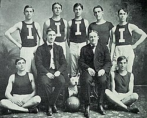

A kosárlabda egyik ősének tekinthető labdajátékot az amerikai bennszülöttek játszották. A maják és az aztékok változatában egy falra erősített fémgyűrűn kellett átütni a csapattagoknak egy golyót. A maják játéka kegyetlen volt: a vesztes csapatot feláldozták az isteneknek. A kosárlabdához hasonló játékokat már évszázadok óta játszanak; a legrégebbi ismert változata a „pok-ta-pok”, amelyet 3000 évvel ezelőtt a mexikói olmékok játszottak. A mai játékot 1891-ben alakította ki a kanadai Dr. James Naismith az USA-beli YMCA iskolában (Massachusetts). Célja az volt, hogy felkeltse tanítványai érdeklődését a sport iránt. „A véletlen segített: egy, a terem sarkában álló őszibarackos kosárba dobta a labdát, amikor hívatták. Visszatérve látta, hogy tanítványai az unalmas gyakorlatok helyett a kosárba való dobálással próbálkoznak. Megtetszett neki az ötlet, és két héten belül elkészült a játék tervezete.”
Naismith a játék megalkotásakor öt alapelvből építkezett: (1) a játékot gömbölyű labdával, kézzel játsszák; (2) a játékosok ne szaladhassanak a labdával; (3) a játékosok mozgása a pályán ne legyen korlátozva; (4) ne legyen durva érintkezés; (5) a labdát vízszintesen elhelyezett kapuba, a játékosoknál magasabbra kelljen dobni.
A „kapu” céljára egy barackoskosár szolgált az iskola tornatermének erkélyére szerelve, mely 10 láb (3,05 m) magasan volt – a mai napig nem változott ez a magasság. Az első, 1891. december 21-én megrendezett mérkőzésen a portás feladata volt egy létrán ülve, hogy gól esetén kivegye a játékra használt futball-labdát a kosárból. Ezt csak egyszer kellett megtennie, hiszen a mérkőzés végeredménye 1-0 lett. A mérkőzéseket a mai játéktér kb. felének megfelelő területen játszották.
Az első szabályzat 13 pontja 1892. január 15-én jelent meg a Triangle magazinban „Új Játék” címen. A „kosárlabda” kifejezést Naismith egyik diákja találta ki. A YMCA gondozta a szabályokat, s hálózata révén a játék nagyon gyorsan elterjedt.
Kezdetben a büntetődobást két kézzel ejtve dobták, most már viszont külön technika van mindenféle dobásnak. Például ziccerdobás, tempódobás stb.
